Claude Code + tf-etl-env で、要件定義からテスト・運用設計まで 7 フェーズを一気通貫で構築するデモンストレーション
製造現場の日次 CSV を Lakehouse に取り込み、品質チェック・KPI 集計を経て AM 8:00 の工場長ダッシュボードへ。
| データ量 | 500〜1,000 件/日 | ターゲット | Azure Fabric (Delta) |
| SLA | 毎日 AM 8:00 JST | エラー率 | < 1% |
段階的に型安全性・品質を強化する 3 層アーキテクチャ
ソースそのまま保持
型変換 + 品質チェック
Star Schema 集計
tf-etl-env のエージェント・ルール・スキルが各フェーズを支援
YAML 形式の構造化要件テンプレート。不足情報を AI が推論し、確認を求める。
5 つの代替案を 7 次元で比較。ADR で意思決定を自動記録。
Medallion の段階的型強化。SCD Type 2 による設備マスタの履歴管理。
6 次元品質フレームワーク + データ契約。品質スコア 5 段階評価。
冪等性パターン + Dead Letter テーブル。再実行安全な設計。
品質ルール 1:1 対応のテストケース。TDD ワークフロー。
障害対応ランブック 3 シナリオ + データリネージ図 + SLA 定義。
Bronze → Silver 昇格時に 6 つの観点で品質ゲートを通過
Mermaid で自動生成されたパイプラインフロー・データリネージ


このデモで使用した Agent / Rule / Skill / Command
ADR で自動記録し、意思決定のトレーサビリティを確保
品質ルールを設計段階で定義。テストファースト
ランブックを事前生成。冪等性で安全に再実行
コードと同時にドキュメント・図を自動生成
専用エージェント + コマンドで各フェーズを支援
品質ルール 1:1 対応のテスト。83 件で検証済み
GitHub リポジトリにソースコード・ドキュメント・テスト一式を公開しています。 15〜20 分のライブ実演台本も付属。